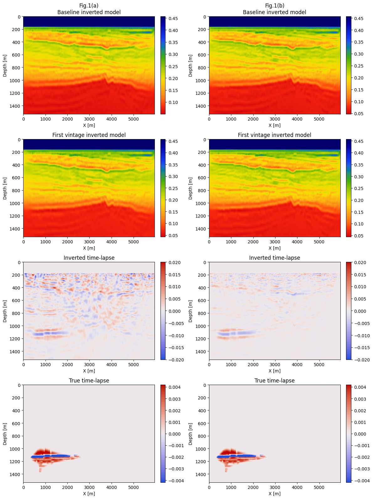
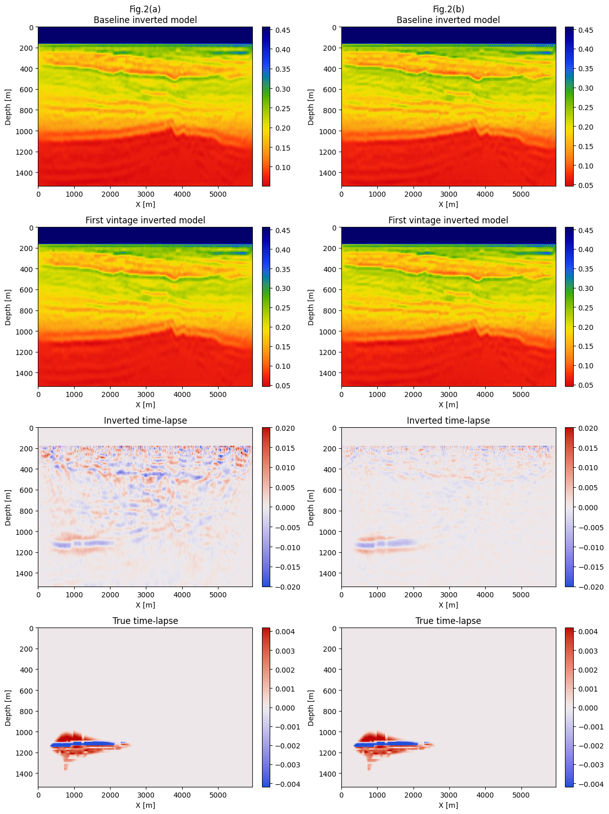

Time-lapse seismic monitoring of geological carbon storage with the nonlinear joint recovery model
Objectives/Scope (100 words, 600 characters)
During time-lapse seismic monitoring, weak 4D signal below the level of inversion or migration artifacts poses challenges. To address these, low-cost randomized non-replicated acquisitions and linear joint recovery model (JRM) have been introduced to take advantage of the shared information between different vintages in the time-lapse seismic data and subsurface structure undergoing localized changes. Since the relationship between seismic data and subsurface properties is seldomly linear, we propose a more versatile nonlinear JRM, which extends linear JRM to nonlinear forward modeling.
Methods, Procedures, Process (250 words, 1500)
During linear JRM, for two seismic vintages, three unknown parameters are inverted, namely the common component, \(m_0\), and innovation components, \(\delta m_1\) and \(\delta m_2\), with respect to this common component and there is a linear relationship between these components and seismic data. But during the proposed nonlinear JRM (nJRM), we take advantage of the full nonlinear relation between these components and time-lapse data resulting in minimization of the objective included in Figure 1. After mathematical manipulations on the expression for the gradients, the computational costs of minimizing this joint objective can be made equivalent to independent FWI (one gradient per vintage).
To demonstrate the advocacy of the proposed nonlinear extension, we consider an experimental setup involving CO2 monitoring. To model a time-lapse change in the monitor survey, we simulated two-phase flow in a 2D slice from the Compass model (See Figure XXX) followed by simulating time-lapse seismic data for the baseline and monitor surveys.
Results, Observations, Conclusions (250 words, 1500)
Figures 1 (a) and (b) show independent and joint recovery respectively for the replicated acquisition and Figures 2 (a) and (b) for the non-replicated acquisition. In these figures, the first and second rows show recovery of baseline and monitor images respectively, the third and fourth rows show inverted and ground truth time-lapse differences. In both cases, time-lapse differences inverted with nonlinear JRM are more accurate and contain less artifacts and noise thanks to exploiting common information between surveys. Moreover, independent recovery suffers consequently from non-replication with clear artifacts in the shallow area (Figure 2(a)) while nonlinear JRM stays relatively focused on the time-lapse difference.
These results strengthens our argument for a low-cost randomized non-replicated acquisition in the time-lapse seismic survey for GCS.
Finally, we measure the degree of repeatability of the recovery of the vintages and their time-lapse difference which is mathematically determined by the normalized root mean square (NRMS) value where a lower value indicates better recovery. In this study, the nrms value for the JRM in the case of the replicated and non-replicated surveys are 0.5% and 1.2% respectively and the SNR value between the ground truth and recovered time-lapse is -2.02 dB and -7.1 dB respectively.
Significance/Novelty (100 words, 600)
To our knowledge, this is the first study on the application of non-linear JRM with non-replicated time-lapse data for geological carbon storage. With the proposed new technique, we argue that there is no need for a replicated expensive time-lapse survey, rather non-replicated coarser surveys are sufficient to provide an artifact-free time-lapse signal with JRM. More information on this work is in (https://github.com/slimgroup/IMAGE2023).

